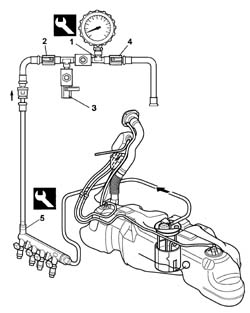

0510C10 fuel system - check delivery pressure
- Path
- Procedures > 05 DIAGNOSIS > 0510 VARIOUS CONTROLS > 0510C check systems > 0510C10 fuel system - check delivery pressure
- Kind
- repair procedure (removal / refitting; the operation number is the code)
- Applies to
- engines: 1.2 8v, 1.4 8v; all production periods
- Interactive page
- https://sloeber94.github.io/elrnDB-fDbl/en/#/2584141
Applies to: engines: 1.2 8v, 1.4 8v; all production periods
Disconnect the electrical connections from the injectors.
Name | Connector | |
|---|---|---|
- | Injector |
1. Set up the test equipment as described in points 2, 3 and 4 below.
 | Name | Country |
|---|---|---|
1 | Pressure gauge | 1.860.955.000 |
2. Open the cock.
3. Close the cock.
4. Close the cock.
5. Position the test equipment and connect it to the fuel manifold's bleed valve by means of the specific adaptor.
| Name | Country |
|---|---|---|
5 | Rapid connector | 1.870.684.000 |

Applies to: engines: 1.2 8v, 1.4 8v; all production periods
Reconnect the electrical connections to the adaptors.
 | Name | Connector |
|---|---|---|
- | Injector |
Start the engine and check that the pressure gauge's reading is within the specified limits.
 | Measurement | Value | |
|---|---|---|---|
- | Check delivery pressure (bar) | 3.5 |
Turn off the engine.
Operate the fuel pump by means of the 'Active Diagnosis' of the diagnostic equipment and measure an increase in pressure up to 4 bar.
Disconnect the test equipment and specific adaptor from the fuel manifold bleed valve.
| Name | Country |
|---|---|---|
- | Rapid connector | 1.870.684.000 |
| Name | Country |
|---|---|---|
- | Pressure gauge | 1.860.955.000 |
Topics linked from this page (1)
Topics that link to this page (15)
- B10 ENGINE DOES NOT START / UNDER NO CIRCUMSTANCES
- B13 ENGINE STARTS WITH DIFFICULTY'
- B20 ENGINE STARTS, AND CUTS OUT STRAIGHT AWAY
- D01 ENGINE NOT RUNNING SMOOTHLY / (HESISTANT)
- D02 ENGINE NOT RUNNING SMOOTHLY / (LOSING POWER)
- D03 ENGINE NOT RUNNING SMOOTHLY / (IRREGULAR OPERATION)
- D05 ENGINE DOES NOT PRODUCE BEST PERFORMANCE
- D10 ENGINE IDLE IRREGULAR
- D21 ENGINE CUTS OUT WHILST DRIVING
- W01 HIGH CO EMISSIONS
- W02 CO EMISSIONS LOW, NOx EMISSIONS HIGH
- W10 BLACK EXHAUST FUMES
- X01 EXCESSIVE FUEL CONSUMPTION
- Z53 MISFIRE ERROR
- Z54 MISFIRE ERROR IN ONE CYLINDER